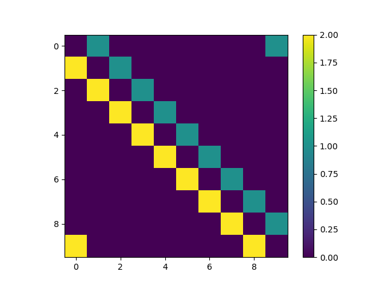
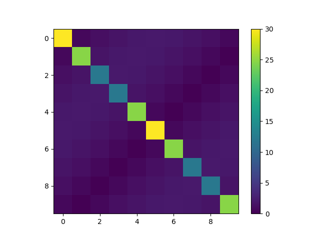
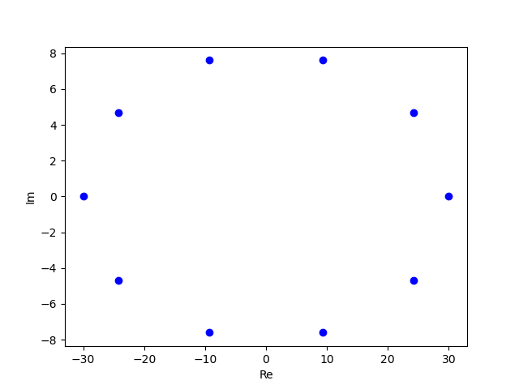

Lindblad Master Equation and FFT
Lindblad Master Equation
$$\begin{align} \frac{\mathrm{d}}{\mathrm{d}t}\rho = -\mathrm{i} [H, \rho] + \sum_n \left(L_n \rho L_n^{\dagger} - \frac{1}{2}\{L_n^{\dagger}L_n, \rho\}\right) \end{align}$$小括号中的求和对应耗散过程. 求和中第一项是跃迁算符 $L_n$ 导致的 $L_n$ 的末态的增加, 求 和中第二项是初态的减少, 或者 coherence 的减少.
Example: Tight binding
解析分析
如 Phys. Rev. Lett. 127, 070402 (2022) 中的例子:
$$\begin{align} H =& 0 \\ L_{R, l} =& \sqrt{\gamma_R} |l + 1\rangle\langle l| \\ L_{L, l} =& \sqrt{\gamma_L} | l - 1 \rangle\langle l| \end{align}$$这是一个一维链, 格点之间没有相互作用, 但相邻格点之间有类似自发辐射的非相干的跃迁 过程.
这此模型中, 主方程只有耗散项. 第一项对应
$$\begin{align} L_{R,l} \rho L_{R, l}^{\dagger} = \gamma_R \rho_{ll} |l + 1\rangle\langle l + 1| \end{align}$$$L_{L, l}$ 是类似的. 可以看出, 这一项的作用是使跃迁的末态 $|l + 1\rangle$ 的 population 增加, 且 增加的多少与初态 $|l\rangle$ 的 population 成正比. 这很物理.
再看另外一项:
$$\begin{align} &- \frac{1}{2} \sum_l\{L_{R, l}^{\dagger}L_{R, l}, \rho\} = - \frac{1}{2}\gamma_R\sum_{l, m, n} \{|l\rangle\langle l|, \rho_{mn}|m\rangle\langle n|\}\\ =& - \frac{1}{2}\gamma_R \sum_{l,n}(|l\rangle\langle n| \rho_{l,n} + |n\rangle\langle l|, \rho_{n,l}) \\ =& - \gamma_R \sum_l \rho_{ll} |l\rangle\langle l| -\frac{1}{2}\gamma_R \sum_{l, n\neq l}\left(\rho_{l, n}|l\rangle\langle n| + \rho_{n, l}|n\rangle\langle l| \right) \end{align}$$第一项是对角项 population 的减小对角项越大, 减小越多. 第二项是非对角项 coherence 的减小, 它本来越大, 减小就越多.
这个例子的特点是, 它是描述的是一维格点中的单体运动, 这就导致每个 $L_n$ 只包含一个矩阵元, 这就导致主方程是分块对角的. 因为我们分析过了, $L_n$ 的作用有三 点
- 使得对角项 population 有一部分与其相邻的 population 成正比的增加, 这描述的是作 为跃迁的终态, population 的增加. 它在主方程中是正号的那个耗散项.
- 使得对角项 population 有一部分与自身成正比的减小, 描述的是作为跃迁的初态, 粒子 跳向别的态, population 减小. 它在主方程中是负号的那个耗散项.
- 使得所有的 coherence 都减小, 自身越大, 减小越快. 因此耗散项使得系统的相干性不 断降低.
这三点没有 population 与 coherence 之间的 couple. 这使得问题大大简化, 立即可以得 到解析解. 所有的 coherence 都是 exponential decay. population 可以用一个 no-Hermition 的有有效 Hamiltonian 来描述
$$\begin{align} H_{\mathrm{eff}} = \sum_{l} (\gamma_R |l + 1\rangle\langle l| + \gamma_L |l\rangle\langle l + 1|) \end{align}$$我们忽略了一个常数算符. 它描述了 population 之间的相互跃迁. 这就是一个 tight binding 的模型. 在周期性边 界条件下, 由于平移对称性, 它可以严格解, 具体结果可以参考 Phys. Rev. Lett. 127, 070402 (2021).
数值分析
这个 model 是快速傅里叶变换 (FFT) 的极佳的例子.
import numpy as np
import matplotlib.pyplot as plt
def hamiltonian(N, gamma_l, gamma_r):
a = np.eye(N-1)
right = np.vstack((np.zeros(N-1), a))
right = np.hstack((right, np.zeros([N, 1])))
left = np.hstack((np.zeros([N-1, 1]), a))
left = np.vstack((left, np.zeros(N)))
pbc = np.zeros([N, N])
pbc[0, -1] = gamma_l # peridical boundary condition
pbc[-1, 0] = gamma_r
h = left*gamma_l + right*gamma_r + pbc
return h
N = 10
h = hamiltonian(N, 1, 2)
plt.imshow(h)
plt.colorbar()
plt.savefig('hamiltonian.png', transparent=True)
P = np.array([[np.exp(-1j*2*np.pi/N * a*b) for a in range(N)]
for b in range(N)])
D = P.conjugate()@h@P
plt.clf()
plt.imshow(np.abs(D))
plt.colorbar()
plt.savefig('population.png', transparent=True)
eigenvalues = np.array([D[i, i] for i in range(N)])
plt.clf()
for i in eigenvalues:
plt.plot(i.real, i.imag, 'bo')
plt.xlabel('Re')
plt.ylabel('Im')
plt.savefig('eigenvalues.png', transparent=True)周期边界条件下的 Hamiltonian:

对坐标基底做 FFT , 换到动量基底下, Hamiltonian 就对角化了:

本征值就是一组平面波:
